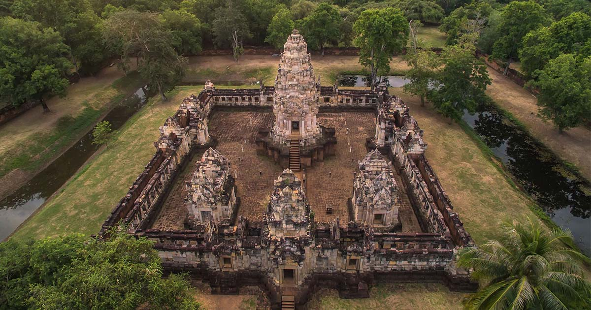
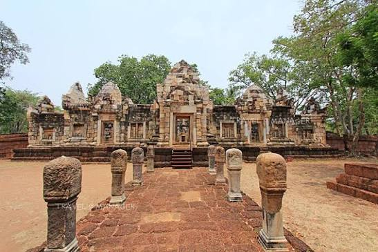
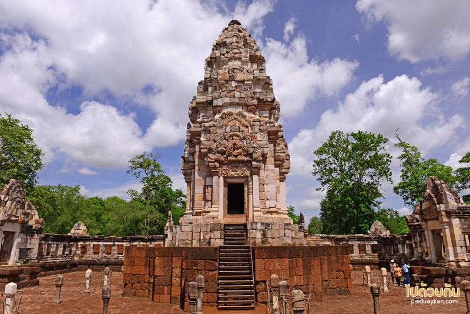

ความเป็นมา
ปราสาทสด๊กก๊อกธมเป็นโบราณสถานในวัฒนธรรมเขมรโบราณ ตั้งอยู่ที่บ้านหนองหญ้าแก้ว ตำบลโคกสูง อำเภอโคกสูง จังหวัดสระแก้ว และอยู่ห่างจากชายแดนไทย–กัมพูชาประมาณ 1 กิโลเมตร
ปราสาทแห่งนี้สร้างขึ้นในรัชสมัยพระเจ้าอุทัยทิตยวรมันที่ 2 โดยจารึกระบุศักราช พ.ศ. 1595 และเกี่ยวข้องกับศาสนาพราหมณ์–ฮินดู ลัทธิไศวนิกาย
ตัวปราสาทสร้างจากหินทรายและศิลาแลง มีรูปแบบศิลปะเขมรแบบคลังผสมบาปวน และประกอบด้วยปราสาทประธาน บรรณาลัย ระเบียงคด และกำแพงแก้ว
ที่ตั้ง
จังหวัด
สระแก้ว
อำเภอ
โคกสูง
ตำบล
โคกสูง
ประเภท
โบราณสถานและอุทยานประวัติศาสตร์
สถาปัตยกรรม
ปราสาทสด๊กก๊อกธมมีการวางผังตามคติความเชื่อ ของศาสนาฮินดู โดยมีปรางค์ประธานเป็นศูนย์กลาง เปรียบเสมือนเขาพระสุเมรุ ซึ่งเป็นศูนย์กลางของจักรวาลตามความเชื่อ
ภายในบริเวณปราสาทประกอบด้วยองค์ประกอบสำคัญ ได้แก่ ปราสาทประธาน บรรณาลัย 2 หลัง ระเบียงคด คูน้ำ และกำแพงแก้ว
ปราสาทหันหน้าไปทางทิศตะวันออก ซึ่งตามคติความเชื่อของขอมโบราณ เป็นทิศแห่งแสงสว่างและความเป็นสิริมงคล
ศิลาจารึก
หนึ่งในหลักฐานสำคัญของปราสาทสด๊กก๊อกธม คือการค้นพบศิลาจารึกจำนวน 2 หลัก ซึ่งจารึกด้วยอักษรขอมโบราณ
ศิลาจารึกเหล่านี้เป็นหลักฐานสำคัญ ที่ช่วยให้นักวิชาการศึกษาเรื่องราว เกี่ยวกับการสร้างและการบูรณะปราสาท รวมถึงลำดับพระนามของกษัตริย์เขมรโบราณ
จารึกสด๊กก๊อกธมหลักที่ 2 ยังมีความสำคัญต่อการศึกษาประวัติศาสตร์ ของอาณาจักรเขมรในสมัยเมืองพระนคร
องค์ประกอบที่สำคัญ
- ปราสาทประธาน ซึ่งเป็นศูนย์กลางของโบราณสถาน
- บรรณาลัย 2 หลัง บริเวณด้านหน้าปราสาทประธาน
- ระเบียงคดที่ล้อมรอบพื้นที่ศักดิ์สิทธิ์
- กำแพงแก้วล้อมรอบพื้นที่ด้านนอก
- คูน้ำรอบบริเวณปราสาท
- บารายขนาดใหญ่ทางด้านทิศตะวันออก
- ทางเดินหินที่เชื่อมพื้นที่ต่าง ๆ ภายในโบราณสถาน
ความสำคัญทางประวัติศาสตร์
ปราสาทสด๊กก๊อกธมเป็นหลักฐานสำคัญ ที่แสดงให้เห็นถึงการแพร่กระจายของวัฒนธรรมเขมรโบราณ ในพื้นที่ภาคตะวันออกของประเทศไทย
นอกจากคุณค่าด้านสถาปัตยกรรมแล้ว ศิลาจารึกที่ค้นพบยังเป็นหลักฐานสำคัญ สำหรับศึกษาประวัติศาสตร์และการปกครอง ของอาณาจักรเขมรโบราณ
การอนุรักษ์
กรมศิลปากรได้ดำเนินการอนุรักษ์ และบูรณะปราสาทสด๊กก๊อกธม โดยใช้หลักการทางโบราณคดี เพื่อรักษาสภาพโบราณสถานให้คงอยู่ และสามารถศึกษาเรียนรู้ได้ในระยะยาว
ปัจจุบันยังมีศูนย์บริการข้อมูล ที่จัดแสดงเรื่องราวเกี่ยวกับปราสาท สถาปัตยกรรม วัฒนธรรมเขมร ศิลาจารึก และการอนุรักษ์
ทำไมถึงน่าสนใจ?
ปราสาทสด๊กก๊อกธมไม่ได้เป็นเพียงโบราณสถานเก่าแก่ แต่ยังเป็นแหล่งเรียนรู้ที่ช่วยให้ผู้เข้าชม เข้าใจประวัติศาสตร์ ศิลปะ สถาปัตยกรรม และความเชื่อของผู้คนในอดีต
ความโดดเด่นของสถานที่แห่งนี้ อยู่ที่องค์ประกอบทางสถาปัตยกรรม และศิลาจารึกที่เป็นหลักฐานทางประวัติศาสตร์ ทำให้ปราสาทสด๊กก๊อกธมมีคุณค่าทั้งในด้าน การท่องเที่ยวและการศึกษา
ข้อมูลสรุป
ชื่อสถานที่
ปราสาทสด๊กก๊อกธม
ประเภท
โบราณสถาน
จังหวัด
สระแก้ว
อำเภอ
โคกสูง